Regression comparison
Download resultsAggregation weights
\widehat y(x)=y_{\rm mean}+y_{\rm std}\sum_{h=1}^{H}\beta_h\mu_h(x)Coefficients can be negative and need not sum to one. Intervals describe coefficient uncertainty; the dashed reference is DE’s fixed 1/H weight.
BDKN

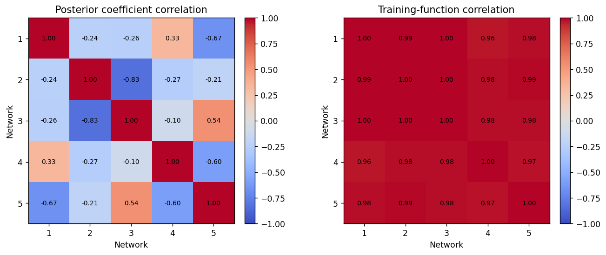


Each density panel uses its own X range for readability; coefficient intervals above share a common axis. Prior reference conditions on fitted noise. Contribution shares use held-out inputs; test targets are used only for scoring.
| Network | β mean | 95% low | 95% high | P(β > 0) | Contribution share | Test RMSE | Test NLL |
|---|---|---|---|---|---|---|---|
| 1 | 0.17517 | -0.13543 | 0.48577 | 0.86707 | 0.12754 | 0.38313 | 1.62273 |
| 2 | 0.24406 | -0.10258 | 0.59069 | 0.91723 | 0.26779 | 0.49073 | 8.75495 |
| 3 | 0.40074 | -0.00952 | 0.81101 | 0.97227 | 0.28915 | 0.31065 | 1.53182 |
| 4 | 0.13482 | -0.08680 | 0.35643 | 0.88485 | 0.09272 | 0.34041 | 1.33298 |
| 5 | 0.24661 | 0.06158 | 0.43164 | 0.99525 | 0.22280 | 0.48393 | 4.31273 |
Functional repulsion · BDKN
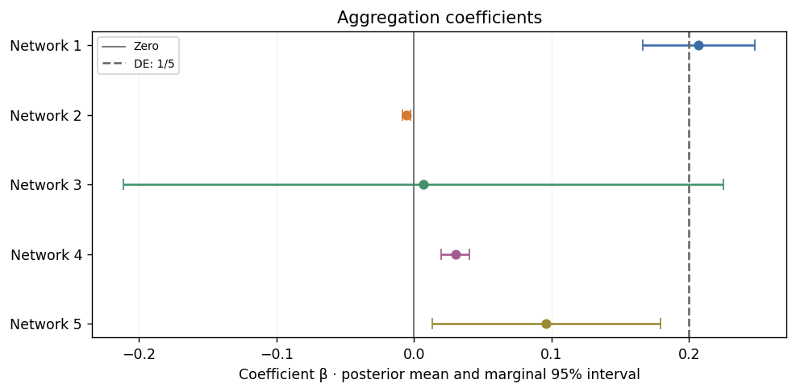
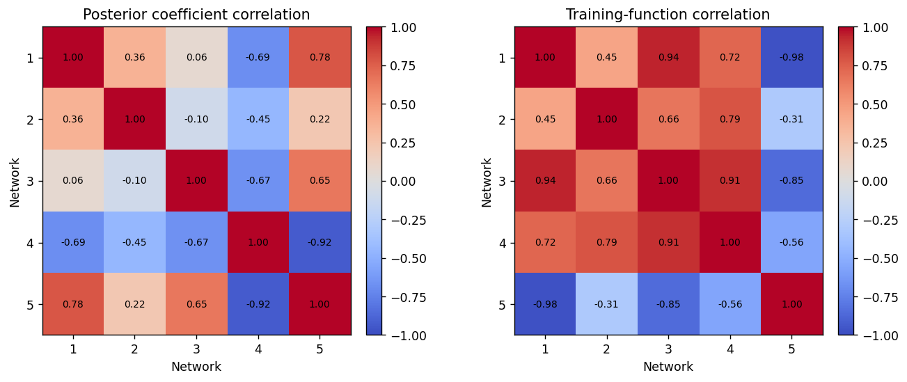
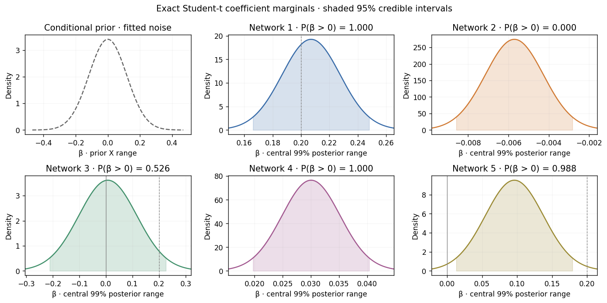
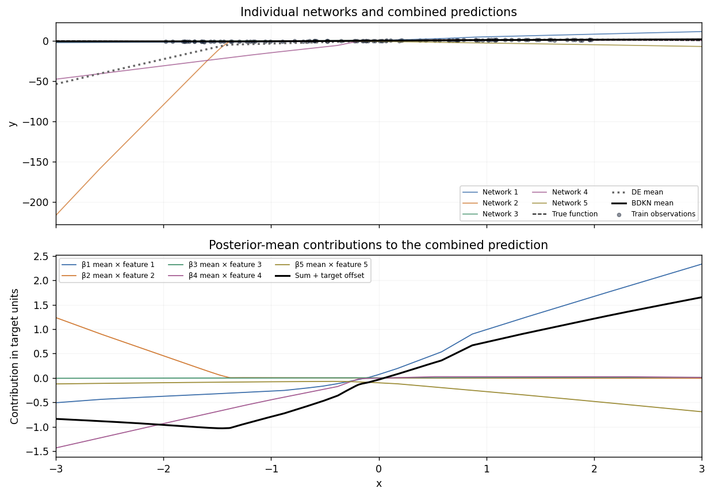
Each density panel uses its own X range for readability; coefficient intervals above share a common axis. Prior reference conditions on fitted noise. Contribution shares use held-out inputs; test targets are used only for scoring.
| Network | β mean | 95% low | 95% high | P(β > 0) | Contribution share | Test RMSE | Test NLL |
|---|---|---|---|---|---|---|---|
| 1 | 0.20708 | 0.16609 | 0.24806 | 1.00000 | 0.52441 | 4.66220 | 2.37811 |
| 2 | -0.00570 | -0.00858 | -0.00283 | 0.00008 | 0.09762 | 60.74507 | 4.07823 |
| 3 | 0.00706 | -0.21115 | 0.22528 | 0.52554 | 0.00336 | 0.51599 | 16.86814 |
| 4 | 0.03003 | 0.01971 | 0.04034 | 1.00000 | 0.21674 | 18.12145 | 3.17072 |
| 5 | 0.09611 | 0.01320 | 0.17903 | 0.98823 | 0.15787 | 3.68698 | 2.25344 |
Weight repulsion · BDKN
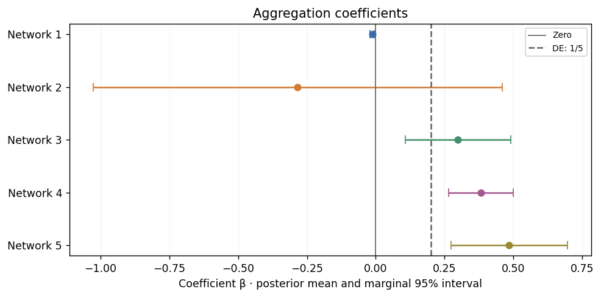
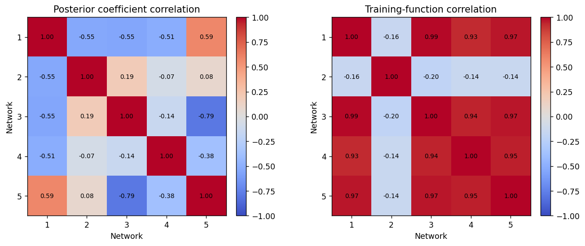
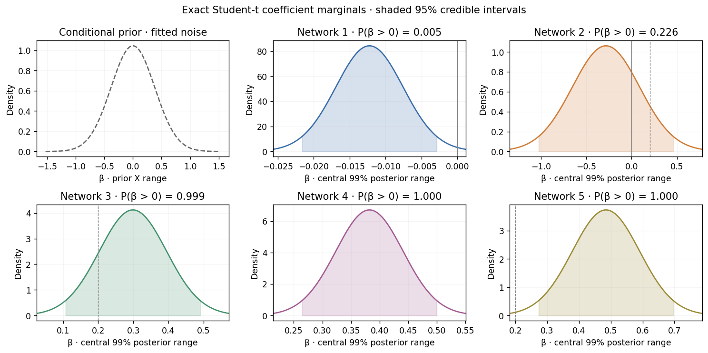

Each density panel uses its own X range for readability; coefficient intervals above share a common axis. Prior reference conditions on fitted noise. Contribution shares use held-out inputs; test targets are used only for scoring.
| Network | β mean | 95% low | 95% high | P(β > 0) | Contribution share | Test RMSE | Test NLL |
|---|---|---|---|---|---|---|---|
| 1 | -0.01225 | -0.02161 | -0.00288 | 0.00544 | 0.05083 | 10.30050 | 4.66478 |
| 2 | -0.28334 | -1.02626 | 0.45958 | 0.22552 | 0.05179 | 1.33374 | 1.33048 |
| 3 | 0.29883 | 0.10708 | 0.49058 | 0.99871 | 0.47050 | 7.97740 | 3.09757 |
| 4 | 0.38217 | 0.26470 | 0.49964 | 1.00000 | 0.27064 | 2.53786 | 1.77086 |
| 5 | 0.48471 | 0.27319 | 0.69624 | 0.99999 | 0.15624 | 0.40609 | 1.58014 |
First-order repulsion · BDKN
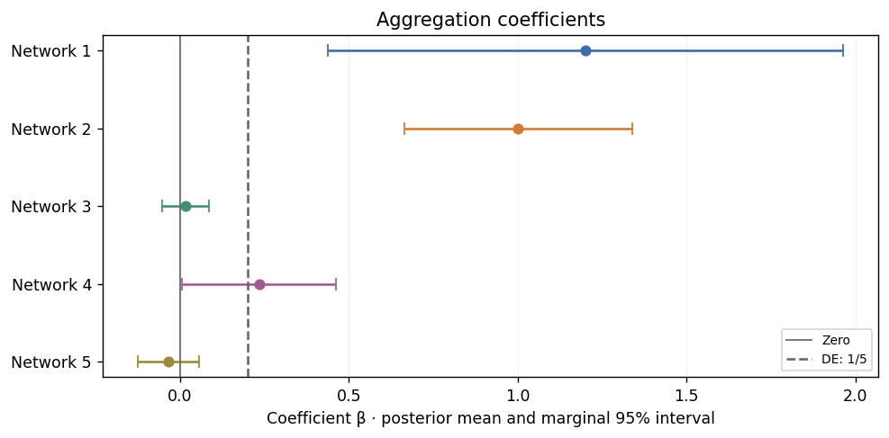
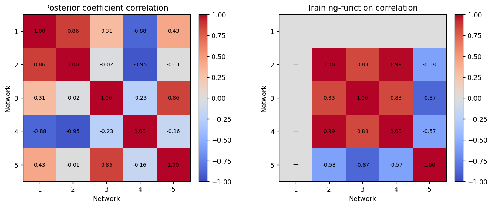
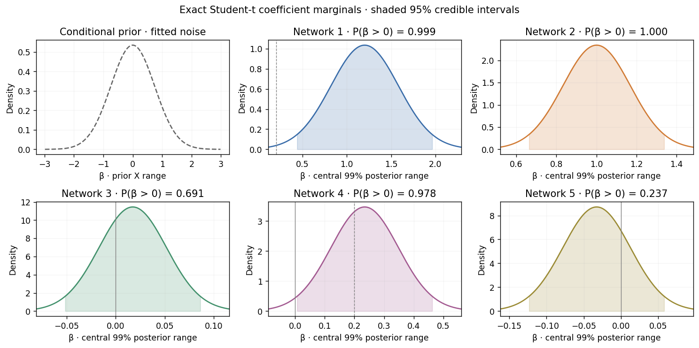
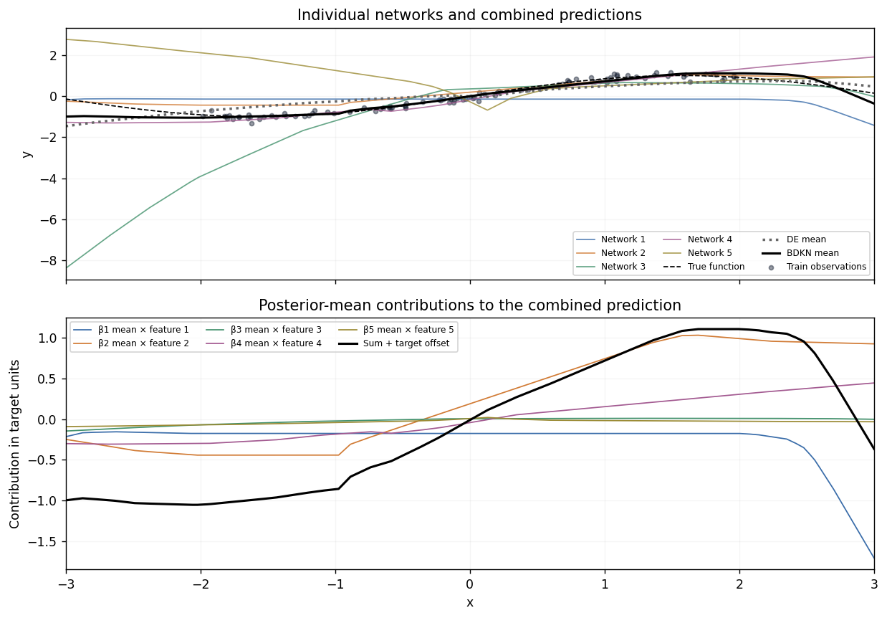
Each density panel uses its own X range for readability; coefficient intervals above share a common axis. Prior reference conditions on fitted noise. Contribution shares use held-out inputs; test targets are used only for scoring.
| Network | β mean | 95% low | 95% high | P(β > 0) | Contribution share | Test RMSE | Test NLL |
|---|---|---|---|---|---|---|---|
| 1 | 1.20152 | 0.43896 | 1.96408 | 0.99884 | 0.22161 | 0.83042 | 1.22416 |
| 2 | 1.00107 | 0.66400 | 1.33814 | 1.00000 | 0.51315 | 0.34867 | 0.52156 |
| 3 | 0.01735 | -0.05157 | 0.08627 | 0.69068 | 0.02605 | 2.32437 | 1.08429 |
| 4 | 0.23455 | 0.00700 | 0.46209 | 0.97826 | 0.20697 | 0.56662 | 3.60511 |
| 5 | -0.03276 | -0.12332 | 0.05781 | 0.23733 | 0.03222 | 1.72535 | 2.18069 |